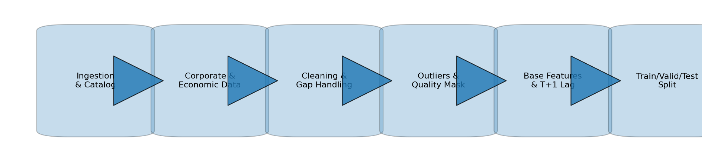
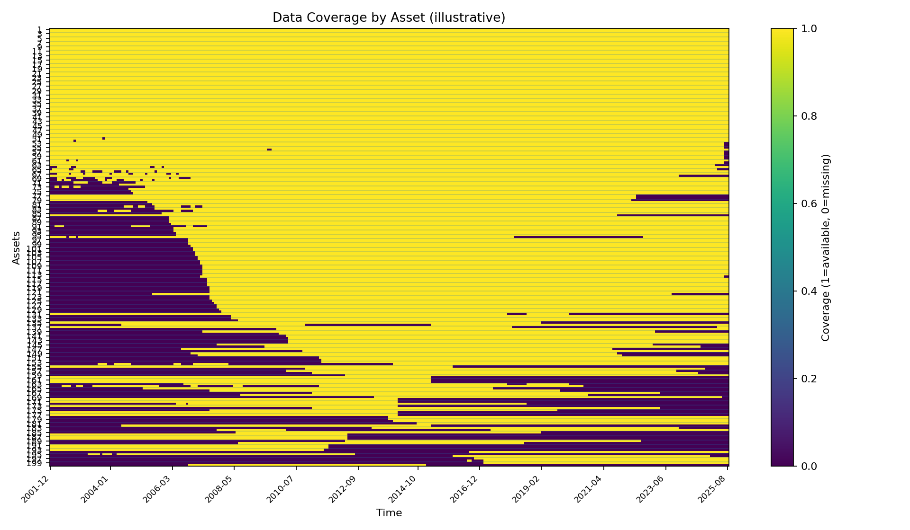
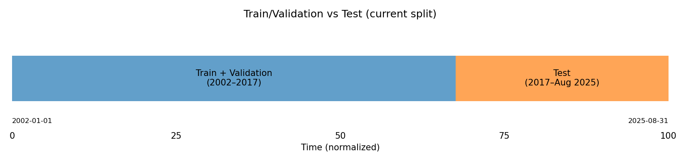
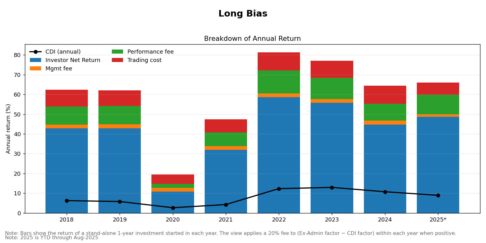
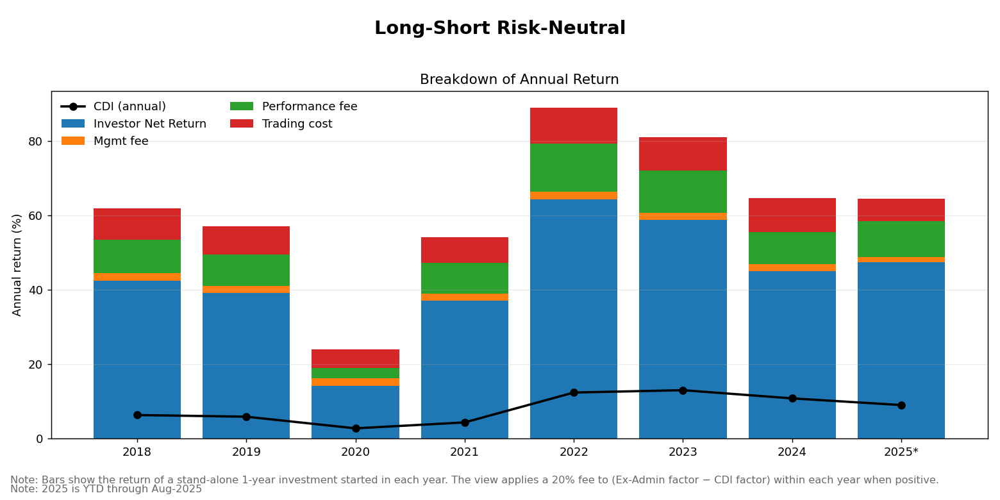
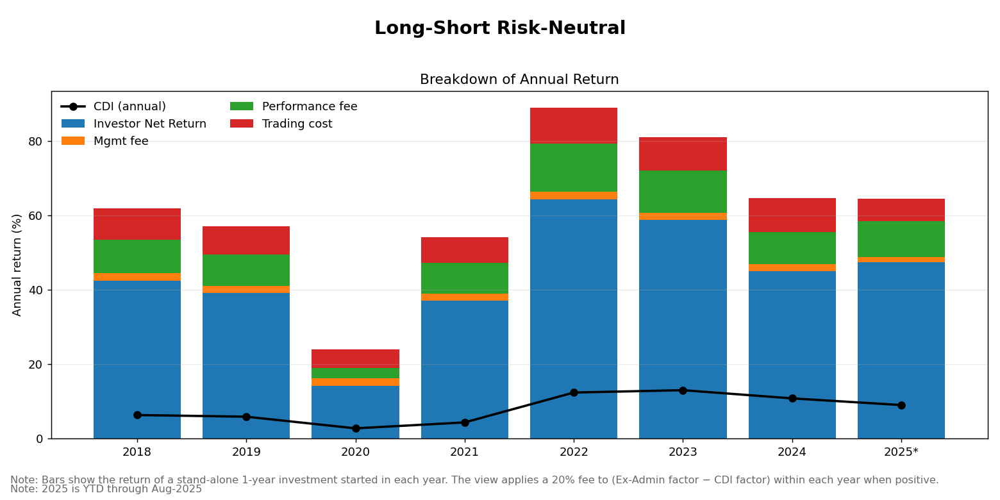
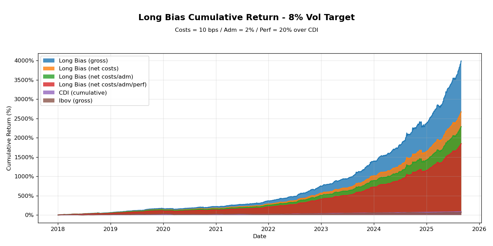
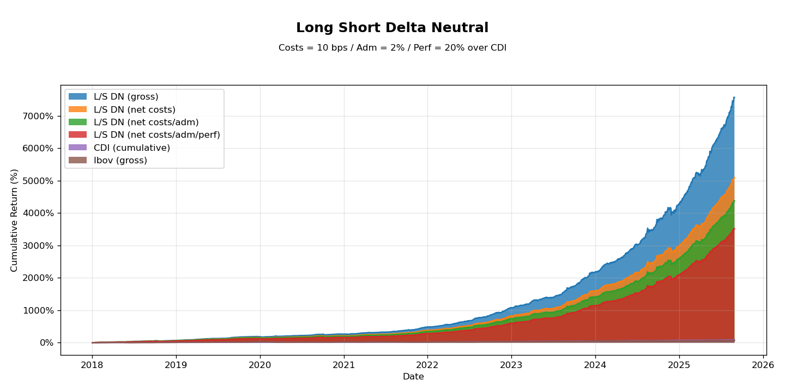
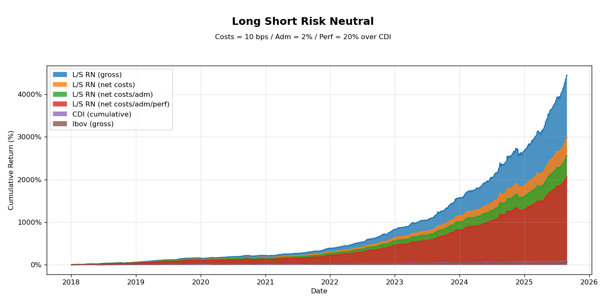

Factor Fund — Data & Research Pipeline
Overview
Artificial Intelligence for Financial Markets.
This project develops innovative quantitative strategies powered by advanced AI. In this talk we focus on a Long-Bias fund that uses risk-factor models and neural networks to rank assets and build portfolios. The approach is systematic, risk-aware, and designed to be scalable and transparent.
Scope: Brazilian equities listed on B3 (Brasil, Bolsa, Balcão); currency BRL.
- Benchmark: CDI
- Fees: 2% management; 20% performance (over CDI)
- Target volatility: 8% p.a.
- Style: Factor-based selection + neural nets
- Public showcase of the process — keeping proprietary code, parameters, and raw data private.
- Focus on data hygiene, time awareness (no look-ahead), and reproducibility.
Pipeline Overview (Stages 01–06)
What the pipeline does (B3 equities, BRL)
- 01 — Ingestion & Source Catalog: define universe and a minimal schema (e.g., date, ticker).
- 02 — Corporate & Economic Integration: fundamentals + macro from trusted sources.
- 03 — Cleaning & Gap Handling: type coercion; time-aware fill (future-first never!).
- 04 — Outliers, Stale Prints & Quality Masks: robust clipping + quality_mask.
- 05 — Base Features & Lag Alignment: momentum/volatility/liquidity; T+1 alignment to avoid look-ahead.
- 06 — Train / Validation / Test Split: current split 2002–2017 (Train/Val) vs 2018–Aug-2025 (Test).

- Time awareness (T+1 features only); reproducible runs.
- Corporate-action-adjusted prices; liquidity screens.
- Cost-aware modeling; limits to control gross/turnover.
Pipeline (01-06)
Stage 01 - Ingestion & Source Catalog
Define the universe; map provider symbols; minimal schema (EOD,date,ticker).Stage 02 - Corporate & Economic Integration
Consolidate corporate fundamentals and macro indicators from well-known providers.
Pipeline (03-04)
Stage 03 - Cleaning & Gap Handling
Numeric coercion; per-ticker time-aware filling (future-first, then past).Stage 04 - Outliers, Stale Prints & Quality Masks
Robust clipping andquality_maskto flag unusable observations.
Pipeline (05-06)
Stage 05 - Base Features & Lag Alignment
Momentum/volatility/liquidity features with T+1 execution alignment.Stage 06 - Train/Validation/Test Split
Current split: 2002-2017 (Train/Val) vs 2018-Aug 2025 (Test).
Illustration - Coverage

- Example coverage/quality view after masks.
- Intended for public documentation; no sensitive data.
Illustration - Walk-Forward

- Current backtest uses a single hold-out.
- Walk-forward is a future extension (periodic retraining + multiple OOS blocks).
Next Steps (07-11)
- Consolidation → Strategies → Fees → Charts → Risk & Metrics.
- Publish only sanitized figures/tables to
reports/for the showcase.
Próximos (07-11)
- 07 - Métricas & Risco: vol 63d, VaR/CVaR, DD, Calmar.
- 08 - Estratégias: IDX_TARGET, LS_DN, LS_RN.
- 09 - Taxas (unificado fim): adm/perf/IOF/IR; audit simples.
- 10 - Gráficos & narrativa: heatmap YTD, split por buckets.
- 11 - Produção: cron, GitHub Actions, publicação.
Annual return — por estratégia
  

Curvas acumuladas — por estratégia
  
Próximos (07–11)
- 07 — Métricas & Risco: vol 63d, VaR/CVaR, DD, Calmar.
- 08 — Estratégias: IDX_TARGET, LS_DN, LS_RN.
- 09 — Taxas (unificado fim): adm/perf/IOF/IR; audit simples.
- 10 — Gráficos & narrativa: heatmap YTD; split por buckets.
- 11 — Produção: cron; GH Actions; publicação.

Privacy & Contact
- Proprietary code, hyperparameters, and raw datasets reside under
private/(git-ignored).
- Contact: Celso Avila — (add preferred email/URL).